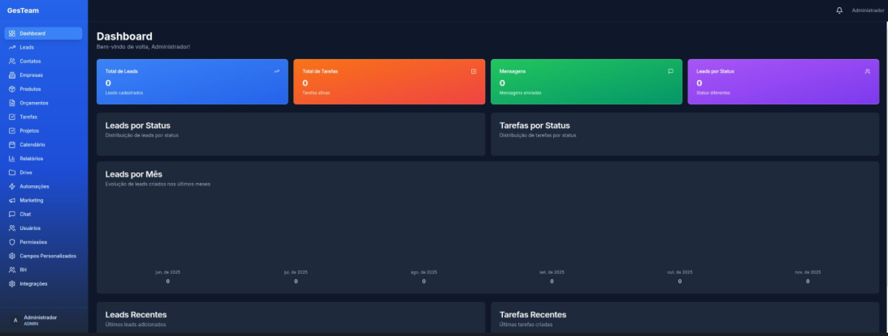
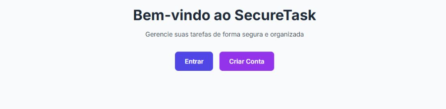
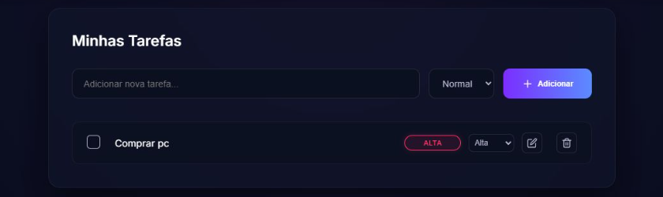

Análise e Desenvolvimento de Sistemas
Universidade Cruzeiro do Sul
Em andamento: março de 2026 a abril de 2028 (previsão de conclusão).
Desenvolvedor Full Stack
Sou desenvolvedor full stack e atuo com desenvolvimento, manutenção e evolução de aplicações web, com React, Next.js, TypeScript e Node.js, incluindo arquiteturas serverless na AWS. No dia a dia, também presto suporte ao produto diretamente ao cliente quando necessário. Curso Análise e Desenvolvimento de Sistemas e busco aprender continuamente.
Curso Análise e Desenvolvimento de Sistemas e trabalho como desenvolvedor full stack, atuando em desenvolvimento, manutenção e suporte ao produto.
Tenho interesse em engenharia de LLM e em aprender a orquestrar agentes de IA de forma autônoma.
Universidade Cruzeiro do Sul
Em andamento: março de 2026 a abril de 2028 (previsão de conclusão).
15h · concluído em
Ver certificado de Fundamentos do Next.js14h · concluído em
Ver certificado de Criando SaaS com Next.js e RBAC6h · concluído em
Ver certificado de Integração de APIs de IA na PráticaNível intermediário
React, Next.js, TypeScript
Nível intermediário
Node.js, REST APIs, Serverless Framework
Nível intermediário
Lambda, Cognito, DynamoDB, Amplify, CloudWatch, IAM
Nível intermediário
PostgreSQL, MySQL
Nível intermediário
CI/CD, GitHub, Scrum, Kanban
Nível inicial
Flask, SQLAlchemy
Atuo como suporte N2 do produto, analisando e resolvendo incidentes que chegam à sustentação.
Curso Análise e Desenvolvimento de Sistemas e complemento a formação com cursos como Fundamentos do Next.js e Integração de APIs de IA na Prática.

Em desenvolvimento
Objetivo: sistema de CRM para gerenciar meus estudos e cursos e acompanhar o processo de trabalho no ambiente de estudos, de forma organizada como em uma empresa.
Funcionalidades: autenticação, dashboard com indicadores, leads (tabela e Kanban), tarefas, chat interno e gestão de usuários.
Tecnologias: Next.js 14, TailwindCSS, shadcn/ui, Prisma, PostgreSQL, NextAuth, Docker.
Minha participação: projeto iniciado a partir de um curso e finalizado com apoio de inteligência artificial, que gerou cerca de 80% do código. A arquitetura, a revisão e a escolha das tecnologias foram feitas por mim.
Aprendizados: Next.js 14, TailwindCSS, shadcn/ui, Prisma, PostgreSQL, NextAuth e Docker.
Ver repositório do GesTeam
Full stack
Objetivo: aprender na prática a integração entre front-end e back-end, autenticação e banco de dados, usando uma lista de tarefas. Por ser um CRUD, o escopo simples facilita o aprendizado.
Funcionalidades: cadastro e login com senha criptografada, criação, edição e exclusão de tarefas pessoais, rotas protegidas por JWT e isolamento de dados entre usuários.
Tecnologias: Node.js, NestJS, Prisma, PostgreSQL, JWT, bcrypt, Helmet, Next.js, React, TypeScript, Tailwind CSS e Axios.
Minha participação: projeto feito sozinho, com apoio de fóruns e documentações.
Aprendizados: criptografia de senhas, DTOs e conceitos básicos de SQL.
Ver repositório do SecureTask
Trabalho em grupo · disciplina de Python
Objetivo: gerenciador de tarefas em que o usuário se registra, faz login e organiza tarefas pessoais por prioridade (baixa, normal, alta). Desenvolvido em grupo, para uma disciplina da faculdade, para aprender conceitos de Python.
Tecnologias: Python, Flask, SQLAlchemy, Marshmallow, Flask-Login, SQLite, bcrypt, HTML com Jinja2 e CSS.
Minha participação: desenvolvi o back-end. O front-end foi feito por Fernanda Feitosa e Natam dos Santos.
Aprendizados: conhecimentos em Python.
Ver repositório do ActionHubBaixe meu currículo completo em PDF, com experiência profissional, formação e competências.
Baixar currículo (PDF)